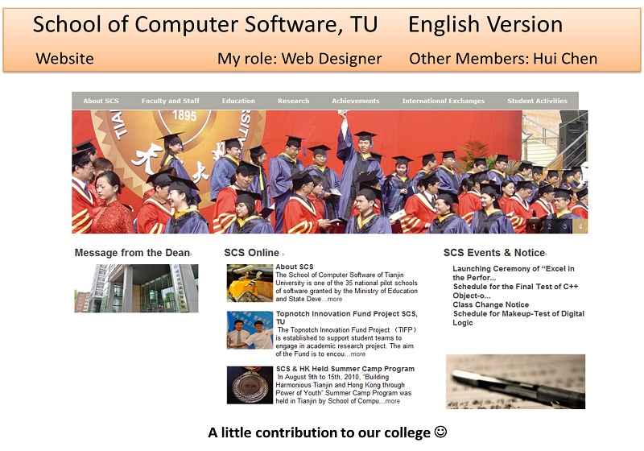

Projects / Website of SCS

Reconstructed the original Chinese version of the website into a totally new English version using ASP.NET.
Acted as the UI designer. Performed proficient skills in HTML, CSS and JavaScript. Partly responsible for the translations.